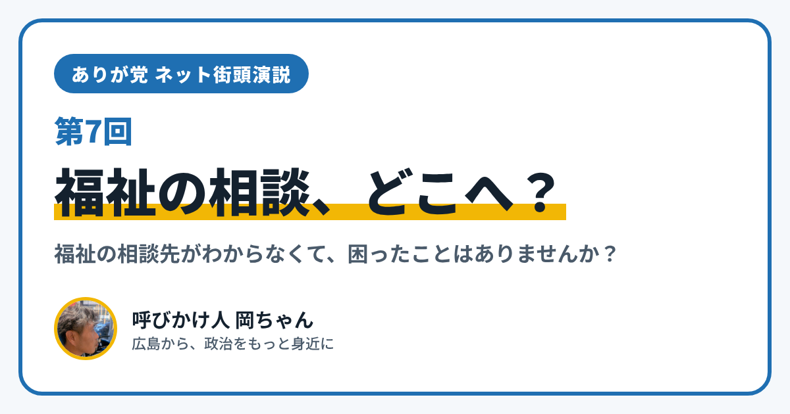

ありが党 ネット街頭演説 第7回｜福祉の相談、どこにすればいい？

こんにちは、ありが党の呼びかけ人、岡ちゃんです。今日のネット街頭演説のテーマは「福祉の相談、どこにすればいい？」です。
福祉の制度を使いたいと思っても、「どこに聞けばいいのかわからない」と困ったこと、ありませんか？ 制度の名前がむずかしくて、窓口に行く前にあきらめてしまうこともあると思います。
今日は、広島市にある身近な相談窓口を2つ紹介します。
障がいのことなら「障害者基幹相談支援センター」
1つめは「広島市障害者基幹相談支援センター」です。広島市の8つの区に、それぞれ担当のセンターがあります。
- 広島市に住む、障がいのある人やその家族、地域の人などが相談できます
- 年齢や障がいの種類に関係なく、相談を受けてくれます
- 障害福祉サービスのことをはじめ、障がいのこと、生活のこと、いろいろな福祉の制度のことを、無料で相談できます
- 受付は、月曜日から金曜日（祝日・年末年始をのぞく）の午前8時30分から午後5時15分までです
各区のセンターの電話番号は、広島市のホームページ「障害のある方とそのご家族の身近な相談窓口」のページにのっています。
高齢の方のことなら「地域包括支援センター」
2つめは「地域包括支援センター」です。広島市内に41か所あり、住んでいる中学校区によって、担当のセンターが決まっています。高齢の方やその家族、地域の人から、健康の不安、介護のこと、認知症のことなど、さまざまな相談を受けています。
僕が大事にしたいこと
僕は、制度があっても、たどりつけなければ、ないのと同じになってしまうと思っています。困ったときに「まずここに聞けばいい」とわかる。そんな、相談へのハードルが低い広島であってほしいと思っています。どうしたら相談しやすくなるのか、みんなで考えたいです。
あなたは、福祉の相談で、どんなことに困ったことがありますか？ 窓口がわからなかった、説明がむずかしかった、行くまでが大変だった。小さなことでも大丈夫です。InstagramのDM（@ayu19841002）や、ありが党のページから、あなたの暮らしの声を聞かせてください。
ありが党は、まだ僕ひとりから始めたばかりです。政治をもっと身近にしたいと思う方、一緒に考えてくれる仲間を探しています。InstagramのDM（@ayu19841002）で気軽に声をかけてください。